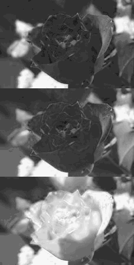
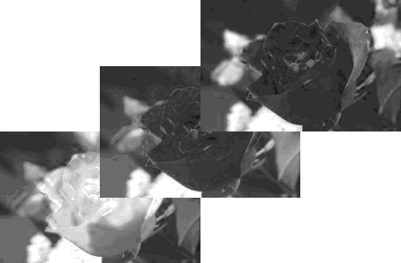
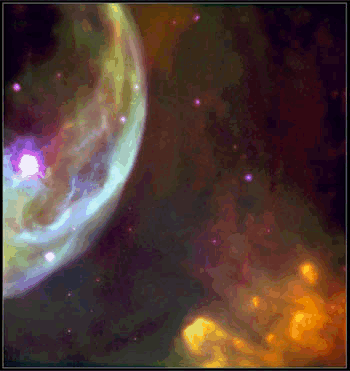
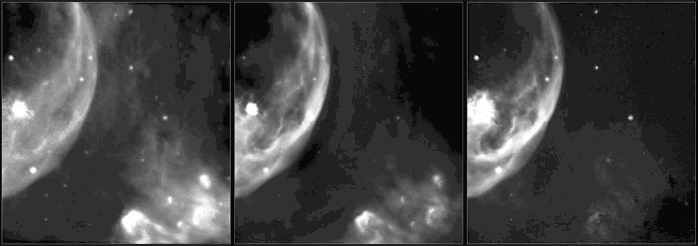
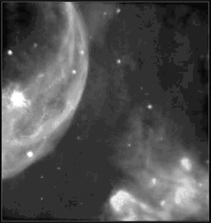

Note: Please see the IMAGE function, which replicates the functionality of this routine and offers an interactive interface.
The TV procedure displays images in a Direct Graphics window without scaling the intensity. To display an image with scaling, use the TVSCL procedure.
Note:
The TV procedure displays an image in its original form. The TVSCL procedure displays an image scaled to range from 0 up to 255 depending on the colors available to IDL.
RGB images are displayed with the TV procedure. To display a TrueColor image (an image with 16, 24, or 32 bits per pixel) you must use the TRUE keyword.
While the TV procedure does not scale the intensity of an image, it does convert the input image data to byte type. Values outside the range [0,255] are “wrapped” during the conversion. In addition, for displays with less than 256 colors, elements of the input image with values between !D.TABLE_SIZE and 255 will be displayed using the color index !D.TABLE_SIZE-1.
If no optional parameters are present, IMAGE is output to the display with its lower-left corner at coordinate (0, 0). The optional parameters can be used to specify the screen position of the image in a variety of ways.
TV, Image [, Position ] [, / CENTIMETERS | , / INCHES ] [, / ORDER ] [, TRUE ={1 | 2 | 3}] [, / WORDS ] [, XSIZE = value ] [, YSIZE = value ]
or
TV, Image [, X , Y [, Channel ]] [, / CENTIMETERS | , / INCHES ] [, / ORDER ] [, TRUE ={1 | 2 | 3}] [, / WORDS ] [, XSIZE = value ] [, YSIZE = value ]
Graphics Keywords: [, CHANNEL = value ] [, / DATA | , / DEVICE | , / NORMAL ] [, / T3D ] [, Z = value ]
A vector or two-dimensional, or three-dimensional array to be displayed as an image. If this argument is not already of byte type, it is converted prior to use.
If X and Y are present, they specify the lower-left coordinate of the displayed image, relative to the lower-left corner of the screen.
An integer specifying the position for Image within the graphics window. Image positions run from the top left of the screen to the bottom right. If a position number is used instead of X and Y , the position of the image is calculated from the dimensions of the image as follows (integer arithmetic is used).
For example, when displaying 128 by 128 images on a 512 by 512 display, the position numbers run from 0 to 15 as follows:
|
0 |
1 |
2 |
3 |
|
4 |
5 |
6 |
7 |
|
8 |
9 |
10 |
11 |
|
12 |
13 |
14 |
15 |
Note: When using a device with scalable pixels (e.g., PostScript), the XSIZE and YSIZE keywords should also be used.
Some image display devices are capable of storing more than a single image or can combine three single color images to form a TrueColor image. CHANNEL specifies the memory channel to be written. It is assumed to be zero if not specified. This parameter is ignored on display systems that have only one memory channel. The Channel argument is identical to the CHANNEL graphics keyword.
Set this keyword to indicate that the X , Y , Xsize , Ysize , and Z arguments are given in centimeters from the origin. This system is useful when dealing with devices, such as PostScript printers, that do not provide a direct relationship between image pixels and the size of the resulting image.
Set this keyword to indicate that all position and size values are given in inches from the origin. This system is useful when dealing with devices, such as PostScript printers, that do not provide a direct relationship between image pixels and the size of the resulting image.
If specified, ORDER overrides the current setting of the !ORDER system variable for the current image only. If set, the image is drawn from the top down instead of the normal bottom up.
Set this keyword to a nonzero value to indicate that a TrueColor (16-, 24-, or 32-bit) image is to be displayed. The value assigned to TRUE specifies the index of the dimension over which color is interleaved. The image parameter must have three dimensions, one of which must be equal to three. For example, set TRUE to 1 to display an image that is pixel interleaved and has dimensions of (3, m, n ). Specify 2 for row-interleaved images, of size ( m , 3, n ), and 3 for band-interleaved images of the form ( m , n , 3).
Note: When a TrueColor image is specified, the image is displayed using decomposed color, regardless of the setting of the DECOMPOSED keyword for the current graphics device.
Set this keyword to indicate that words (short integers) instead of 8-bit bytes are to be transferred to the device. This keyword is valid only when using devices that can transfer 16-bit pixels. The normal transfer uses 8-bit pixels. If this keyword is set, the Image parameter is converted to short integer type, if necessary, and then written to the display.
The width of the resulting image. On devices with scalable pixel size (such as PostScript), if XSIZE is specified the image will be scaled to fit the specified width. If neither XSIZE nor YSIZE is specified, the image will be scaled to fill the plotting area, while preserving the image’s aspect ratio. This keyword is ignored by pixel-based devices that are unable to change the size of their pixels.
The height of the resulting image. On devices with scalable pixel size (such as PostScript), if YSIZE is specified the image will be scaled to fit the specified height. If neither XSIZE nor YSIZE is specified, the image will be scaled to fill the plotting area, while preserving the image’s aspect ratio. This keyword is ignored by pixel-based devices that are unable to change the size of their pixels.
See Direct Graphics Keywords for the description of the following graphics and plotting keywords:
CHANNEL , DATA , DEVICE , NORMAL , T3D , Z
Note: The T3D and Z keywords are only honored when the DATA keyword is also set. Note also that when the T3D keyword is set, the X and Y arguments and the Z keyword position the lower left corner of the image displayed by TV, but do not change its orientation. Use the POLY_2D routine to warp the image into 3D space.
In addition to the following basic example, this section also includes :
Positioning Multiple Images in Direct Graphics
DisplayingRGB Images with Direct Graphics
Displaying RGB Images and Converting to Grayscale
; Create and display a simple image:
D = BYTSCL(DIST(256)) & TV, D
; Erase the screen:
ERASE
; Use the position parameter to display a number of images in the
; same window.
; Display the image in the upper left corner.
TV, D, 0
; Display another copy of the image in the next position:
TV, D, 1
The following example imports an RGB image from the rose.jpg image file. This RGB image is a close-up photograph of a red rose and is pixel interleaved. This example extracts the three color channels of this image, and displays them as grayscale images in various locations within the same window. Complete the following steps for a detailed description of the process.
Example Code:
See
displaymultiples_direct.
pro
in the
examples/doc/image
subdirectory of the IDL installation directory for code that duplicates this example. Run the example procedure by entering
displaymultiples_direct
at the IDL command prompt or view the file in an IDL Editor window by entering
.EDIT displaymultiples_direct.pro
.
| 1. | Determine the path to the rose.jpg file: |
file = FILEPATH('rose.jpg', $
SUBDIRECTORY = ['examples', 'data'])
| 2. | Use QUERY_IMAGE to query the file to determine image parameters: |
queryStatus = QUERY_IMAGE(file, imageInfo)
| 3. | Set the image size parameter from the query information: |
imageSize = imageInfo.dimensions
| 4. | Use READ_IMAGE to import the image from the file: |
image = READ_IMAGE(file)
| 5. | Extract the channels (as images) from the pixel interleaved RGB image: |
redChannel = REFORM(image[0, *, *])
greenChannel = REFORM(image[1, *, *])
blueChannel = REFORM(image[2, *, *])
| 6. | If you are running IDL on a TrueColor display, set the DECOMPOSED keyword to the DEVICE command to zero before your first color table related routine is used within an IDL session or program. |
DEVICE, DECOMPOSED = 0
| 7. | Since the channels are grayscale images, load a grayscale color table: |
LOADCT, 0
The TV procedure can be used to display the channels (grayscale images). The TV procedure has two different location input arguments. One argument is position . This argument arranges the image in a calculated location based on the size of the display and the dimension sizes of the image.
| 8. | Create a window and horizontally display the three channels with the position argument: |
WINDOW, 0, XSIZE = 3*imageSize[0], YSIZE = imageSize[1], $
TITLE = 'The Channels of an RGB Image'
TV, redChannel, 0
TV, greenChannel, 1
TV, blueChannel, 2
The following figure shows the resulting grayscale images.
|
|
The TV procedure can also be used with its x and y input arguments. These arguments define the location of the lower left corner of the image. The values of these arguments are in device coordinates by default. However, you can provide data or normalized coordinates when the DATA or NORMAL keyword is set.
| 9. | Create a window and vertically display the three channels with the x and y arguments: |
WINDOW, 0, XSIZE = imageSize[0], YSIZE = 3*imageSize[1], $
TITLE = 'The Channels of an RGB Image'
TV, redChannel, 0, 0
TV, greenChannel, 0, imageSize[1]
TV, blueChannel, 0, 2*imageSize[1]
The following figure shows the resulting grayscale images.
|
 |
The x and y arguments can also be used to create a display of overlapping images. When overlapping images in Direct Graphics, you must remember the last image placed in the window will be in front of the previous images. So if you want to bring a display from the back of the window to the front, you must redisplay it after all the other displays.
| 10. | Create another window: |
WINDOW, 2, XSIZE = 2*imageSize[0], YSIZE = 2*imageSize[1], $
TITLE = 'The Channels of an RGB Image'
| 11. | Make a white background to distinguish the edges of the images: |
ERASE, !P.COLOR
| 12. | Diagonally display the three channels with the x and y arguments: |
TV, redChannel, 0, 0
TV, greenChannel, imageSize[0]/2, imageSize[1]/2
TV, blueChannel, imageSize[0], imageSize[1]
The following figure shows the resulting grayscale images.
|
 |
RGB images are three-dimensional arrays made up of width, height, and three channels of color information. In Direct Graphics, these images are displayed with the TV procedure. The TRUE keyword to TV is set according to the interleaving of the RGB image. With RGB images, the interleaving, or arrangement of the channels within the image file, dictates the setting of the TRUE keyword. If the image is:
pixel interleaved (3, w, h), TRUE is set to 1.
line interleaved (w, 3, h), TRUE is set to 2.
planar interleaved (w, h, 3), TRUE is set to 3.
You can determine if an image file contains an RGB image by querying the file. The CHANNELS tag of the resulting query structure will equal 3 if the file’s image is RGB. The query does not determine which interleaving is used in the image, but the array returned in DIMENSIONS tag of the query structure can be used to determine the type of interleaving.
If you are using a PseudoColor display, your RGB images must be converted to indexed images to be displayed within IDL.
The following example queries and imports a pixel-interleaved RGB image from the rose.jpg image file. This pixel interleaved RGB image is a close-up photograph of a red rose. Complete the following steps for a detailed description of the process.
Example Code:
See
displayrgbimage_direct.
pro
in the
examples/doc/image
subdirectory of the IDL installation directory for code that duplicates this example. Run the example procedure by entering
displayrgbimage_direct
at the IDL command prompt or view the file in an IDL Editor window by entering
.EDIT displayrgbimage_direct.pro
.
| 1. | Determine the path to the rose.jpg file: |
file = FILEPATH('rose.jpg', $
SUBDIRECTORY = ['examples', 'data'])
| 2. | Use QUERY_IMAGE to query the file to determine image parameters: |
queryStatus = QUERY_IMAGE(file, imageInfo)
| 3. | Output the results of the file query: |
PRINT, 'Query Status = ', queryStatus
HELP, imageInfo, /STRUCTURE
The following text appears in the Output Log:
Query Status = 1
** Structure <14055f0>, 7 tags, length=36, refs=1:
CHANNELS LONG 3
DIMENSIONS LONG Array[2]
HAS_PALETTE INT 0
IMAGE_INDEX LONG 0
NUM_IMAGES LONG 1
PIXEL_TYPE INT 1
TYPE STRING 'JPEG'
The CHANNELS tag has a value of 3. Thus, the image is an RGB image.
| 4. | Set the image size parameter from the query information: |
imageSize = imageInfo.dimensions
The type of interleaving can be determined from the image size parameter and actual size of each dimension of the image. To determine the size of each dimension, you must first import the image.
| 5. | Use READ_IMAGE to import the image from the file: |
image = READ_IMAGE(file)
| 6. | Determine the size of each dimension within the image: |
imageDims = SIZE(image, /DIMENSIONS)
| 7. | Determine the type of interleaving by comparing the dimension sizes to the image size parameter from the file query: |
interleaving = WHERE((imageDims NE imageSize[0]) AND $
(imageDims NE imageSize[1])) + 1
| 8. | Output the results of the interleaving computation: |
PRINT, 'Type of Interleaving = ', interleaving
The following text appears in the Output Log:
Type of Interleaving = 1
The image is pixel interleaved. If the resulting value was 2, the image would have been line interleaved. If the resulting value was 3, the image would have been planar interleaved.
| 9. | If you are running IDL on a TrueColor display, set the DECOMPOSED keyword to the DEVICE command to one before your first RGB image is displayed within an IDL session or program. |
DEVICE, DECOMPOSED = 1
| 10. | Create a window and display the image with the TV procedure: |
WINDOW, 0, XSIZE = imageSize[0], YSIZE = imageSize[1], $
TITLE = 'An RGB Image'
TV, image, TRUE = interleaving[0]
The following figure shows the resulting RGB image display.
|
|
The following example displays an RGB image, extracts the three channels contained in the glowing_gas.jpg file, which is in the examples/data directory. This file is provided by the Hubble Heritage Team, which is made of AURA, STScI, and NASA.
This example uses REFORM t o extract individual channels as grayscale (intensity) images from the original RGB image. These images are converted to floating-point data and then added together to form a single image, which is a grayscale version of the original RGB image. Complete the following steps for a detailed description of the process.
Example Code:
See
rgbtograyscale.
pro
in the
examples/doc/image
subdirectory of the IDL installation directory for code that duplicates this example. Run the example procedure by entering
rgbtograyscale
at the IDL command prompt or view the file in an IDL Editor window by entering
.EDIT rgbtograyscale.pro
.
| 1. | Determine the path to the file: |
file = FILEPATH('glowing_gas.jpg', $
SUBDIRECTORY = ['examples', 'data'])
| 2. | Query the file to determine the image parameters: |
queryStatus = QUERY_JPEG(file, imageInfo)
| 3. | Set the image size parameter from the query information: |
imageSize = imageInfo.dimensions
| 4. | Import the image from the file: |
READ_JPEG, file, image
| 5. | If you are running IDL on a TrueColor display, set the DECOMPOSED keyword to the DEVICE command to one before your first RGB image is displayed within an IDL session or program. |
DEVICE, DECOMPOSED = 1
| 6. | Create a window and display the image: |
WINDOW, 0, XSIZE = imageSize[0], YSIZE = imageSize[1], $
TITLE = 'Glowing Gas RGB Image'
TV, image, TRUE = 1
The following figure shows the original RGB image.
|
 |
| 7. | Extract the channels (as images) from the RGB image: |
redChannel = REFORM(image[0, *, *])
greenChannel = REFORM(image[1, *, *])
blueChannel = REFORM(image[2, *, *])
| 8. | Initialize the grayscale display: |
DEVICE, DECOMPOSED = 0
LOADCT, 0
| 9. | Create another window and display each channel of the RGB image: |
WINDOW, 1, XSIZE = 3*imageSize[0], YSIZE = imageSize[1], $
TITLE = 'Red (left), Green (middle), ' + $
'and Blue (right) Channels of the RGB Image'
TV, redChannel, 0
TV, greenChannel, 1
TV, blueChannel, 2
The following figure shows the RGB channels. The red channel is on the left, the green channel is in the middle, and the blue channel is on the right.
|
 |
| 10. | Convert the channels into a single grayscale image. |
grayscaleImage = BYTE(0.299*FLOAT(redChannel) + $
0.587*FLOAT(redChannel) + 0.114*FLOAT(blueChannel))
The pixel values of the channels are converted from byte values to floating-point values because byte values cannot exceed 255. The adjustment factors (0.299, 0.587, and 0.114) are used to enhance visual perception and to scale the results to a range from 0 to 255. The BYTE function is used to restore the pixel values back to their original data type.
| 11. | Create another window and display the grayscale image: |
WINDOW, 2, XSIZE = 2*imageSize[0], YSIZE = imageSize[1], $
TITLE = 'Resulting Grayscale Image' + $
TV, grayscaleImage
The following figure shows the result of creating a grayscale image from the individual channels of an RGB image.
|
 |
|
Original |
Introduced |
ERASE Procedure , IIMAGE, SLIDE_IMAGE Procedure , TVRD , TVSCL Procedure , WIDGET_DRAW , WRITE_BMP , and the DECOMPOSED keyword to the DEVICE Procedure routine